Solid bars / CENT = centralized ·
Hatched bars / DIST = distributed ·
Highlighted KPI = better mode ·
Error bars = ±1 std across runs.
NMI
Centralized
0.7412
KMM++
Distributed
0.7695
Dist-KMM++
Silhouette
Centralized
0.5015
KMeans++
Distributed
0.5002
Dist-KMM
Intra-Inertia
Centralized
7.4032
KMeans++
Distributed
7.5122
Dist-PAM
Runtime (s)
Centralized
0.0027
KMeans
Distributed
0.0064
Dist-KMeans
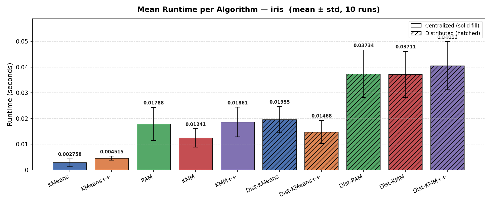
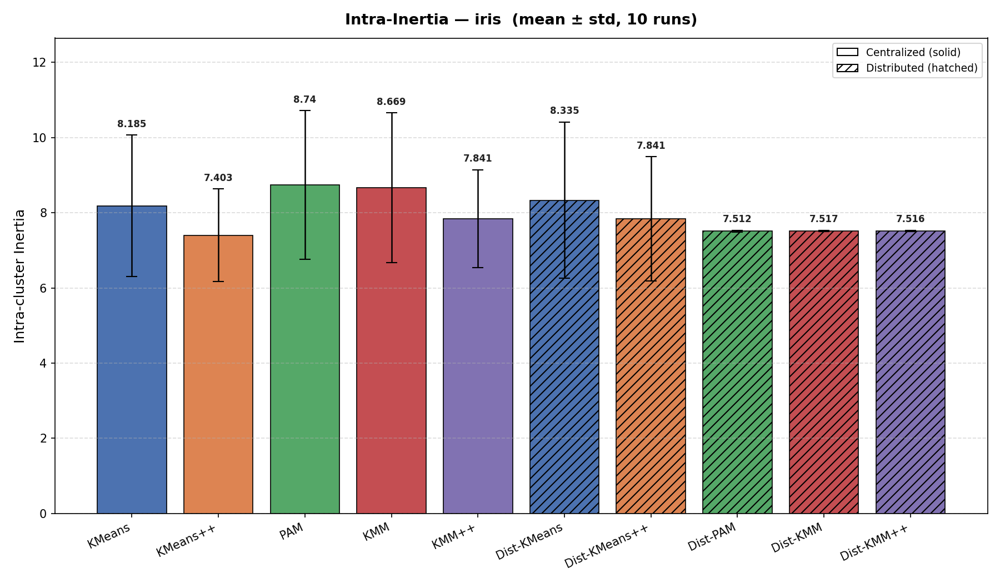
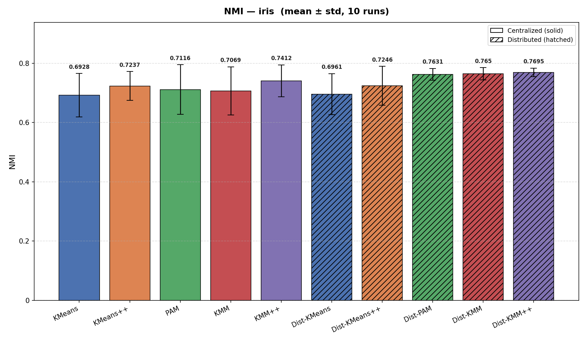
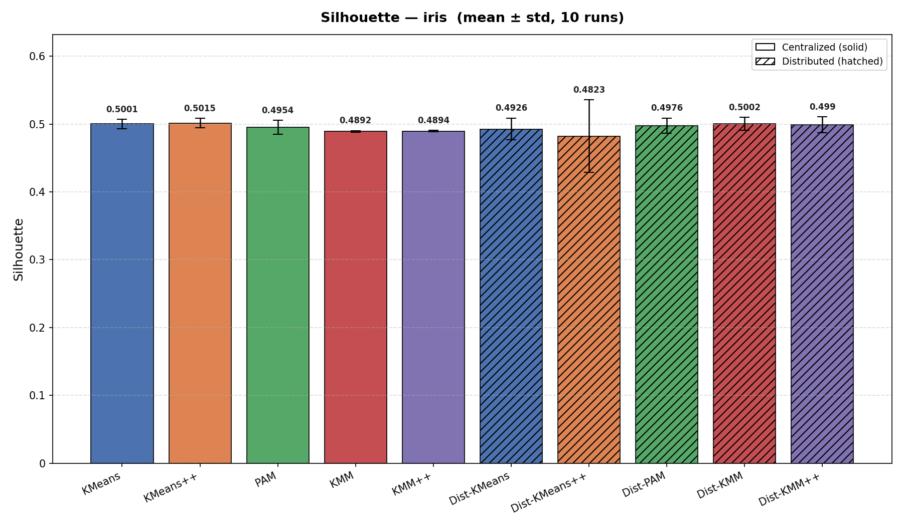
KMeans vs Dist-KMeans
| Metric | Cent mean | ±std | Dist mean | ±std | Δ% | Better |
|---|---|---|---|---|---|---|
| Intra-cluster Inertia ↓ | 8.1852 | 1.8796 | 8.3347 | 2.0827 | +1.8% | CENT |
| Inter-cluster Inertia ↑ | 32.9530 | 1.8796 | 32.8034 | 2.0827 | -0.5% | CENT |
| Silhouette ↑ | 0.5001 | 0.0070 | 0.4926 | 0.0162 | -1.5% | CENT |
| Davies-Bouldin ↓ | 0.7939 | 0.0475 | 0.8639 | 0.2891 | +8.8% | CENT |
| Calinski-Harabasz ↑ | 311.2532 | 74.2726 | 306.8809 | 78.3584 | -1.4% | CENT |
| NMI ↑ | 0.6928 | 0.0732 | 0.6961 | 0.0692 | +0.5% | DIST |
| ARI ↑ | 0.6286 | 0.1378 | 0.6308 | 0.1347 | +0.4% | DIST |
| Purity ↑ | 0.8200 | 0.1058 | 0.8200 | 0.1059 | 0.0% | TIE |
| Runtime (s) ↓ | 0.0027 | 0.0011 | 0.0064 | 0.0018 | +140.1% | CENT |
| Iterations ↓ | 7.7000 | 2.4967 | 1.0000 | 0.0000 | -87.0% | DIST |
KMeans++ vs Dist-KMeans++
| Metric | Cent mean | ±std | Dist mean | ±std | Δ% | Better |
|---|---|---|---|---|---|---|
| Intra-cluster Inertia ↓ | 7.4032 | 1.2324 | 7.8408 | 1.6498 | +5.9% | CENT |
| Inter-cluster Inertia ↑ | 33.7350 | 1.2324 | 33.2973 | 1.6498 | -1.3% | CENT |
| Silhouette ↑ | 0.5015 | 0.0070 | 0.4823 | 0.0535 | -3.8% | CENT |
| Davies-Bouldin ↓ | 0.7737 | 0.0320 | 0.8497 | 0.2892 | +9.8% | CENT |
| Calinski-Harabasz ↑ | 342.2288 | 48.7512 | 324.3257 | 64.4407 | -5.2% | CENT |
| NMI ↑ | 0.7237 | 0.0487 | 0.7246 | 0.0656 | +0.1% | DIST |
| ARI ↑ | 0.6861 | 0.0905 | 0.6816 | 0.1123 | -0.7% | CENT |
| Purity ↑ | 0.8640 | 0.0694 | 0.8533 | 0.0879 | -1.2% | CENT |
| Runtime (s) ↓ | 0.0049 | 0.0013 | 0.0080 | 0.0019 | +62.3% | CENT |
| Iterations ↓ | 6.6000 | 3.1693 | 1.0000 | 0.0000 | -84.8% | DIST |
PAM vs Dist-PAM
| Metric | Cent mean | ±std | Dist mean | ±std | Δ% | Better |
|---|---|---|---|---|---|---|
| Intra-cluster Inertia ↓ | 8.7403 | 1.9799 | 7.5122 | 0.0213 | -14.1% | DIST |
| Inter-cluster Inertia ↑ | 33.1480 | 0.9129 | 33.5996 | 0.6230 | +1.4% | DIST |
| Silhouette ↑ | 0.4954 | 0.0104 | 0.4976 | 0.0112 | +0.4% | DIST |
| Davies-Bouldin ↓ | 0.8707 | 0.1244 | 0.8462 | 0.0839 | -2.8% | DIST |
| Calinski-Harabasz ↑ | 291.0930 | 60.7704 | 328.7539 | 6.8683 | +12.9% | DIST |
| NMI ↑ | 0.7116 | 0.0841 | 0.7631 | 0.0199 | +7.2% | DIST |
| ARI ↑ | 0.6450 | 0.1524 | 0.7394 | 0.0080 | +14.6% | DIST |
| Purity ↑ | 0.8287 | 0.1118 | 0.8980 | 0.0032 | +8.4% | DIST |
| Runtime (s) ↓ | 0.0142 | 0.0066 | 0.0181 | 0.0032 | +27.6% | CENT |
| Iterations ↓ | 3.4000 | 1.1738 | 3.3000 | 0.6749 | -2.9% | DIST |
KMM vs Dist-KMM
| Metric | Cent mean | ±std | Dist mean | ±std | Δ% | Better |
|---|---|---|---|---|---|---|
| Intra-cluster Inertia ↓ | 8.6687 | 1.9945 | 7.5165 | 0.0196 | -13.3% | DIST |
| Inter-cluster Inertia ↑ | 33.9765 | 1.0324 | 33.5962 | 0.6253 | -1.1% | CENT |
| Silhouette ↑ | 0.4892 | 0.0012 | 0.5002 | 0.0096 | +2.3% | DIST |
| Davies-Bouldin ↓ | 0.7727 | 0.0320 | 0.8572 | 0.0843 | +10.9% | CENT |
| Calinski-Harabasz ↑ | 301.6739 | 65.6621 | 328.5353 | 6.9859 | +8.9% | DIST |
| NMI ↑ | 0.7069 | 0.0815 | 0.7650 | 0.0203 | +8.2% | DIST |
| ARI ↑ | 0.6527 | 0.1609 | 0.7395 | 0.0081 | +13.3% | DIST |
| Purity ↑ | 0.8333 | 0.1151 | 0.8980 | 0.0032 | +7.8% | DIST |
| Runtime (s) ↓ | 0.0071 | 0.0032 | 0.0244 | 0.0046 | +243.9% | CENT |
| Iterations ↓ | 9.1000 | 2.5144 | 3.6000 | 0.9661 | -60.4% | DIST |
KMM++ vs Dist-KMM++
| Metric | Cent mean | ±std | Dist mean | ±std | Δ% | Better |
|---|---|---|---|---|---|---|
| Intra-cluster Inertia ↓ | 7.8410 | 1.3065 | 7.5161 | 0.0203 | -4.1% | DIST |
| Inter-cluster Inertia ↑ | 34.4074 | 0.6780 | 33.3441 | 0.4072 | -3.1% | CENT |
| Silhouette ↑ | 0.4894 | 0.0012 | 0.4990 | 0.0117 | +2.0% | DIST |
| Davies-Bouldin ↓ | 0.7604 | 0.0214 | 0.8700 | 0.0660 | +14.4% | CENT |
| Calinski-Harabasz ↑ | 328.9810 | 43.0434 | 326.0799 | 4.5122 | -0.9% | CENT |
| NMI ↑ | 0.7412 | 0.0539 | 0.7695 | 0.0145 | +3.8% | DIST |
| ARI ↑ | 0.7200 | 0.1058 | 0.7425 | 0.0052 | +3.1% | DIST |
| Purity ↑ | 0.8813 | 0.0755 | 0.8993 | 0.0021 | +2.0% | DIST |
| Runtime (s) ↓ | 0.0093 | 0.0027 | 0.0246 | 0.0067 | +164.9% | CENT |
| Iterations ↓ | 7.8000 | 3.5214 | 3.4000 | 0.6992 | -56.4% | DIST |
Summary — all algorithms
| Algorithm | Runtime (s) ↓ | Intra-cluster Inertia ↓ | NMI ↑ | Silhouette ↑ |
|---|---|---|---|---|
| Dist-KMM | 0.0244 | 7.5165 | 0.7650 | 0.5002 |
| Dist-KMM++ | 0.0246 | 7.5161 | 0.7695 | 0.4990 |
| Dist-KMeans | 0.0064 | 8.3347 | 0.6961 | 0.4926 |
| Dist-KMeans++ | 0.0080 | 7.8408 | 0.7246 | 0.4823 |
| Dist-PAM | 0.0181 | 7.5122 | 0.7631 | 0.4976 |
| KMM | 0.0071 | 8.6687 | 0.7069 | 0.4892 |
| KMM++ | 0.0093 | 7.8410 | 0.7412 | 0.4894 |
| KMeans | 0.0027 | 8.1852 | 0.6928 | 0.5001 |
| KMeans++ | 0.0049 | 7.4032 | 0.7237 | 0.5015 |
| PAM | 0.0142 | 8.7403 | 0.7116 | 0.4954 |
NMI
Centralized
0.6231
KMeans
Distributed
0.6409
Dist-KMM
Silhouette
Centralized
0.3881
KMM
Distributed
0.3844
Dist-KMeans
Intra-Inertia
Centralized
215.8383
KMeans
Distributed
215.8507
Dist-KMeans
Runtime (s)
Centralized
0.0060
KMeans
Distributed
0.0113
Dist-KMeans
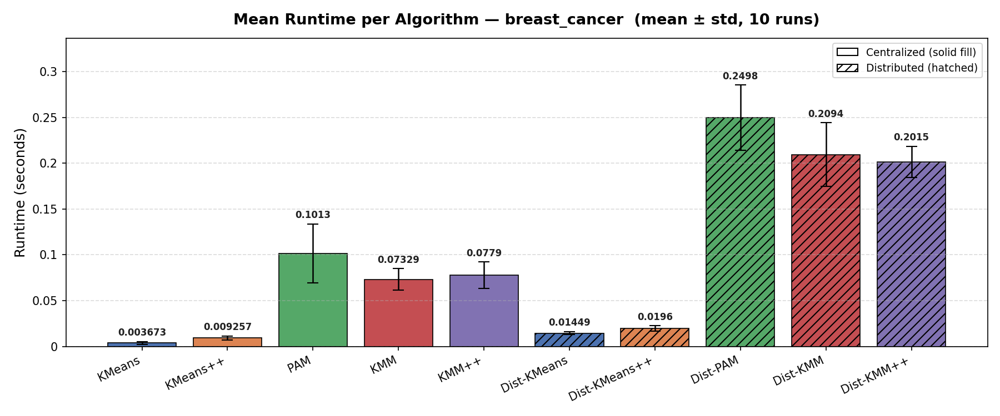
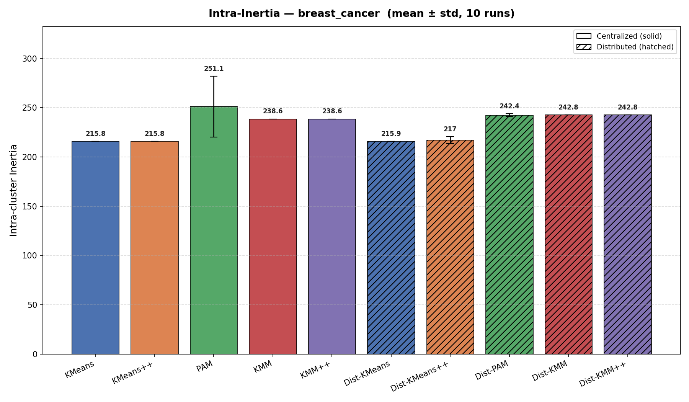
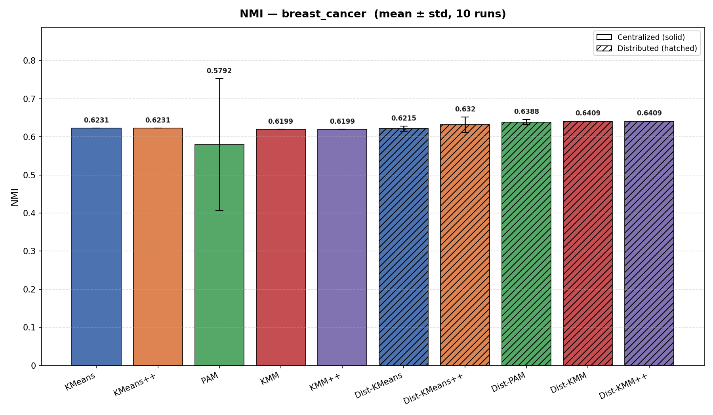
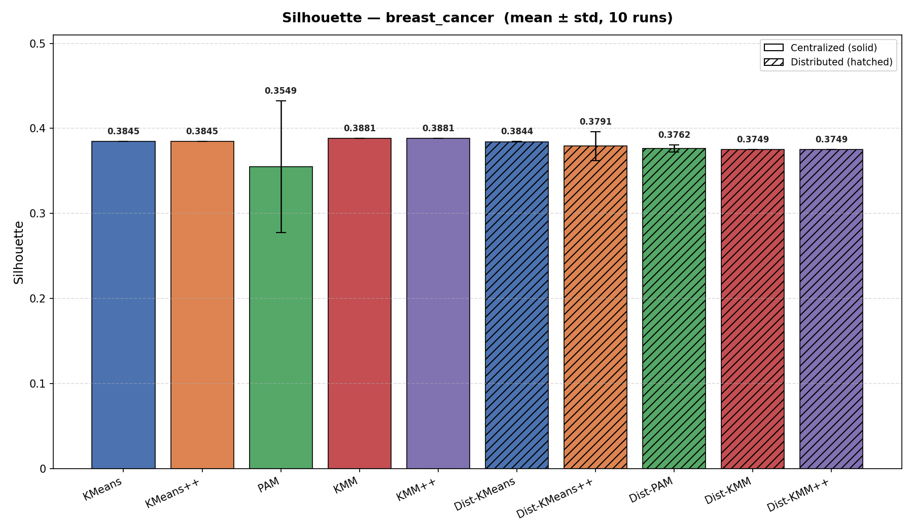
KMeans vs Dist-KMeans
| Metric | Cent mean | ±std | Dist mean | ±std | Δ% | Better |
|---|---|---|---|---|---|---|
| Intra-cluster Inertia ↓ | 215.8383 | 0.0000 | 215.8507 | 0.0107 | +0.0% | CENT |
| Inter-cluster Inertia ↑ | 138.5983 | 0.0000 | 138.5859 | 0.0107 | -0.0% | CENT |
| Silhouette ↑ | 0.3845 | 0.0000 | 0.3844 | 0.0002 | -0.0% | CENT |
| Davies-Bouldin ↓ | 1.1363 | 0.0000 | 1.1365 | 0.0014 | +0.0% | CENT |
| Calinski-Harabasz ↑ | 364.0931 | 0.0000 | 364.0397 | 0.0460 | -0.0% | CENT |
| NMI ↑ | 0.6231 | 0.0000 | 0.6215 | 0.0068 | -0.3% | CENT |
| ARI ↑ | 0.7302 | 0.0000 | 0.7290 | 0.0048 | -0.2% | CENT |
| Purity ↑ | 0.9279 | 0.0000 | 0.9276 | 0.0014 | -0.0% | CENT |
| Runtime (s) ↓ | 0.0060 | 0.0027 | 0.0113 | 0.0019 | +87.7% | CENT |
| Iterations ↓ | 6.8000 | 1.0328 | 1.0000 | 0.0000 | -85.3% | DIST |
KMeans++ vs Dist-KMeans++
| Metric | Cent mean | ±std | Dist mean | ±std | Δ% | Better |
|---|---|---|---|---|---|---|
| Intra-cluster Inertia ↓ | 215.8383 | 0.0000 | 216.9753 | 3.5435 | +0.5% | CENT |
| Inter-cluster Inertia ↑ | 138.5983 | 0.0000 | 137.4613 | 3.5435 | -0.8% | CENT |
| Silhouette ↑ | 0.3845 | 0.0000 | 0.3791 | 0.0170 | -1.4% | CENT |
| Davies-Bouldin ↓ | 1.1363 | 0.0000 | 1.1441 | 0.0272 | +0.7% | CENT |
| Calinski-Harabasz ↑ | 364.0931 | 0.0000 | 359.4277 | 14.5295 | -1.3% | CENT |
| NMI ↑ | 0.6231 | 0.0000 | 0.6320 | 0.0200 | +1.4% | DIST |
| ARI ↑ | 0.7302 | 0.0000 | 0.7370 | 0.0161 | +0.9% | DIST |
| Purity ↑ | 0.9279 | 0.0000 | 0.9299 | 0.0045 | +0.2% | DIST |
| Runtime (s) ↓ | 0.0206 | 0.0315 | 0.0398 | 0.0464 | +93.1% | CENT |
| Iterations ↓ | 9.1000 | 1.3703 | 1.0000 | 0.0000 | -89.0% | DIST |
PAM vs Dist-PAM
| Metric | Cent mean | ±std | Dist mean | ±std | Δ% | Better |
|---|---|---|---|---|---|---|
| Intra-cluster Inertia ↓ | 251.1188 | 30.8102 | 242.3743 | 1.3259 | -3.5% | DIST |
| Inter-cluster Inertia ↑ | 120.1697 | 28.8911 | 125.9388 | 4.2605 | +4.8% | DIST |
| Silhouette ↑ | 0.3549 | 0.0775 | 0.3762 | 0.0042 | +6.0% | DIST |
| Davies-Bouldin ↓ | 1.4984 | 0.5945 | 1.3421 | 0.0416 | -10.4% | DIST |
| Calinski-Harabasz ↑ | 279.6936 | 76.7886 | 294.6736 | 11.7413 | +5.4% | DIST |
| NMI ↑ | 0.5792 | 0.1733 | 0.6388 | 0.0066 | +10.3% | DIST |
| ARI ↑ | 0.6799 | 0.1929 | 0.7507 | 0.0138 | +10.4% | DIST |
| Purity ↑ | 0.9063 | 0.0778 | 0.9337 | 0.0039 | +3.0% | DIST |
| Runtime (s) ↓ | 0.1193 | 0.0229 | 0.1963 | 0.0657 | +64.5% | CENT |
| Iterations ↓ | 2.6000 | 0.5164 | 3.1000 | 0.3162 | +19.2% | CENT |
KMM vs Dist-KMM
| Metric | Cent mean | ±std | Dist mean | ±std | Δ% | Better |
|---|---|---|---|---|---|---|
| Intra-cluster Inertia ↓ | 238.6006 | 0.0000 | 242.7936 | 0.0000 | +1.8% | CENT |
| Inter-cluster Inertia ↑ | 138.0643 | 0.0000 | 124.5915 | 0.0000 | -9.8% | CENT |
| Silhouette ↑ | 0.3881 | 0.0000 | 0.3749 | 0.0000 | -3.4% | CENT |
| Davies-Bouldin ↓ | 1.2238 | 0.0000 | 1.3553 | 0.0000 | +10.7% | CENT |
| Calinski-Harabasz ↑ | 328.0899 | 0.0000 | 290.9607 | 0.0000 | -11.3% | CENT |
| NMI ↑ | 0.6199 | 0.0000 | 0.6409 | 0.0000 | +3.4% | DIST |
| ARI ↑ | 0.7116 | 0.0000 | 0.7551 | 0.0000 | +6.1% | DIST |
| Purity ↑ | 0.9227 | 0.0000 | 0.9350 | 0.0000 | +1.3% | DIST |
| Runtime (s) ↓ | 0.0758 | 0.0136 | 0.2654 | 0.2914 | +250.0% | CENT |
| Iterations ↓ | 8.8000 | 1.0328 | 4.0000 | 0.0000 | -54.5% | DIST |
KMM++ vs Dist-KMM++
| Metric | Cent mean | ±std | Dist mean | ±std | Δ% | Better |
|---|---|---|---|---|---|---|
| Intra-cluster Inertia ↓ | 238.6006 | 0.0000 | 242.7936 | 0.0000 | +1.8% | CENT |
| Inter-cluster Inertia ↑ | 138.0643 | 0.0000 | 124.5915 | 0.0000 | -9.8% | CENT |
| Silhouette ↑ | 0.3881 | 0.0000 | 0.3749 | 0.0000 | -3.4% | CENT |
| Davies-Bouldin ↓ | 1.2238 | 0.0000 | 1.3553 | 0.0000 | +10.7% | CENT |
| Calinski-Harabasz ↑ | 328.0899 | 0.0000 | 290.9607 | 0.0000 | -11.3% | CENT |
| NMI ↑ | 0.6199 | 0.0000 | 0.6409 | 0.0000 | +3.4% | DIST |
| ARI ↑ | 0.7116 | 0.0000 | 0.7551 | 0.0000 | +6.1% | DIST |
| Purity ↑ | 0.9227 | 0.0000 | 0.9350 | 0.0000 | +1.3% | DIST |
| Runtime (s) ↓ | 0.0872 | 0.0230 | 0.1348 | 0.0142 | +54.5% | CENT |
| Iterations ↓ | 11.1000 | 1.3703 | 4.0000 | 0.0000 | -64.0% | DIST |
Summary — all algorithms
| Algorithm | Runtime (s) ↓ | Intra-cluster Inertia ↓ | NMI ↑ | Silhouette ↑ |
|---|---|---|---|---|
| Dist-KMM | 0.2654 | 242.7936 | 0.6409 | 0.3749 |
| Dist-KMM++ | 0.1348 | 242.7936 | 0.6409 | 0.3749 |
| Dist-KMeans | 0.0113 | 215.8507 | 0.6215 | 0.3844 |
| Dist-KMeans++ | 0.0398 | 216.9753 | 0.6320 | 0.3791 |
| Dist-PAM | 0.1963 | 242.3743 | 0.6388 | 0.3762 |
| KMM | 0.0758 | 238.6006 | 0.6199 | 0.3881 |
| KMM++ | 0.0872 | 238.6006 | 0.6199 | 0.3881 |
| KMeans | 0.0060 | 215.8383 | 0.6231 | 0.3845 |
| KMeans++ | 0.0206 | 215.8383 | 0.6231 | 0.3845 |
| PAM | 0.1193 | 251.1188 | 0.5792 | 0.3549 |
NMI
Centralized
0.4745
KMeans++
Distributed
0.4092
Dist-KMeans++
Silhouette
Centralized
0.0541
KMeans++
Distributed
0.0511
Dist-KMeans++
Intra-Inertia
Centralized
1044.6295
KMeans++
Distributed
1067.5681
Dist-KMeans++
Runtime (s)
Centralized
0.3684
KMeans
Distributed
0.1540
Dist-KMeans
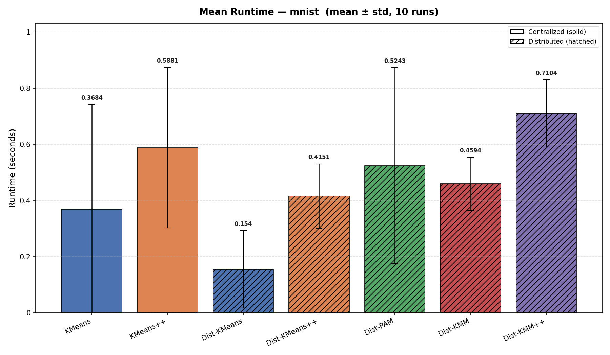
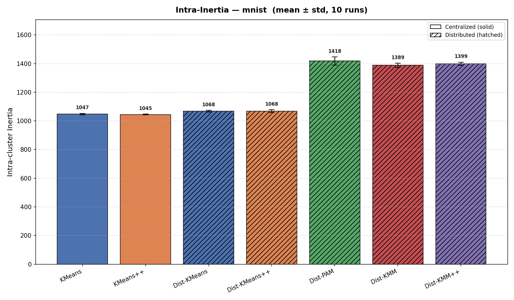
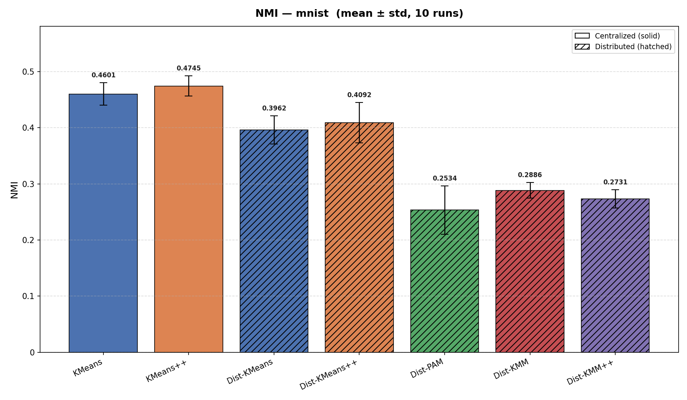
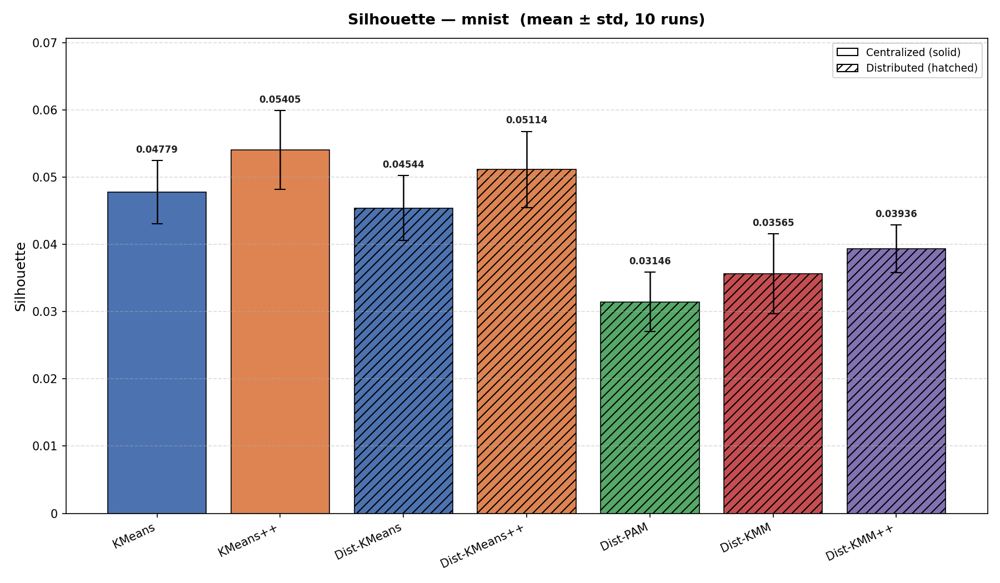
KMeans vs Dist-KMeans
| Metric | Cent mean | ±std | Dist mean | ±std | Δ% | Better |
|---|---|---|---|---|---|---|
| Intra-cluster Inertia ↓ | 1047.3375 | 5.6190 | 1068.3902 | 5.9928 | +2.0% | CENT |
| Inter-cluster Inertia ↑ | 282.5740 | 5.6190 | 261.5213 | 5.9928 | -7.5% | CENT |
| Silhouette ↑ | 0.0478 | 0.0047 | 0.0454 | 0.0048 | -4.9% | CENT |
| Davies-Bouldin ↓ | 2.9122 | 0.0471 | 3.1695 | 0.1286 | +8.8% | CENT |
| Calinski-Harabasz ↑ | 59.6635 | 1.5030 | 54.1315 | 1.5419 | -9.3% | CENT |
| NMI ↑ | 0.4601 | 0.0201 | 0.3962 | 0.0252 | -13.9% | CENT |
| ARI ↑ | 0.3206 | 0.0264 | 0.2644 | 0.0294 | -17.5% | CENT |
| Purity ↑ | 0.5223 | 0.0349 | 0.4742 | 0.0300 | -9.2% | CENT |
| Runtime (s) ↓ | 0.3684 | 0.3728 | 0.1540 | 0.1378 | -58.2% | DIST |
| Iterations ↓ | 34.4000 | 15.2767 | 1.0000 | 0.0000 | -97.1% | DIST |
KMeans++ vs Dist-KMeans++
| Metric | Cent mean | ±std | Dist mean | ±std | Δ% | Better |
|---|---|---|---|---|---|---|
| Intra-cluster Inertia ↓ | 1044.6295 | 2.9502 | 1067.5681 | 10.1592 | +2.2% | CENT |
| Inter-cluster Inertia ↑ | 285.2820 | 2.9502 | 262.3434 | 10.1592 | -8.0% | CENT |
| Silhouette ↑ | 0.0541 | 0.0059 | 0.0511 | 0.0057 | -5.4% | CENT |
| Davies-Bouldin ↓ | 2.8797 | 0.0432 | 3.1020 | 0.0824 | +7.7% | CENT |
| Calinski-Harabasz ↑ | 60.3861 | 0.7949 | 54.3581 | 2.6171 | -10.0% | CENT |
| NMI ↑ | 0.4745 | 0.0181 | 0.4092 | 0.0360 | -13.8% | CENT |
| ARI ↑ | 0.3345 | 0.0265 | 0.2706 | 0.0434 | -19.1% | CENT |
| Purity ↑ | 0.5386 | 0.0288 | 0.4889 | 0.0492 | -9.2% | CENT |
| Runtime (s) ↓ | 0.5881 | 0.2863 | 0.4151 | 0.1152 | -29.4% | DIST |
| Iterations ↓ | 31.8000 | 13.7824 | 1.0000 | 0.0000 | -96.9% | DIST |
Summary — all algorithms
| Algorithm | Runtime (s) ↓ | Intra-cluster Inertia ↓ | NMI ↑ | Silhouette ↑ |
|---|---|---|---|---|
| Dist-KMM | 0.4594 | 1388.5232 | 0.2886 | 0.0357 |
| Dist-KMM++ | 0.7104 | 1399.0382 | 0.2731 | 0.0394 |
| Dist-KMeans | 0.1540 | 1068.3902 | 0.3962 | 0.0454 |
| Dist-KMeans++ | 0.4151 | 1067.5681 | 0.4092 | 0.0511 |
| Dist-PAM | 0.5243 | 1418.2618 | 0.2534 | 0.0315 |
| KMeans | 0.3684 | 1047.3375 | 0.4601 | 0.0478 |
| KMeans++ | 0.5881 | 1044.6295 | 0.4745 | 0.0541 |
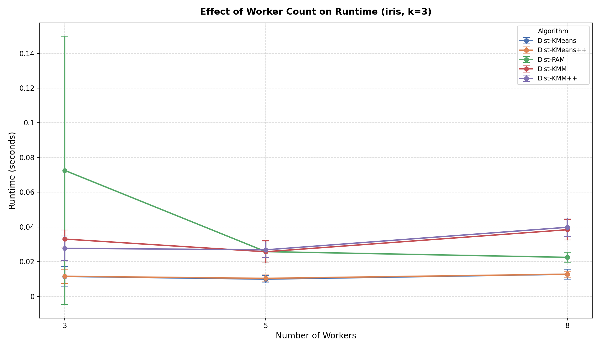
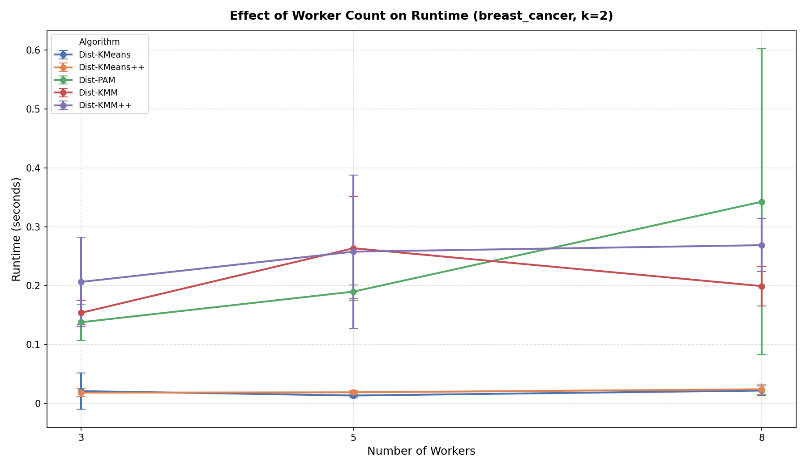
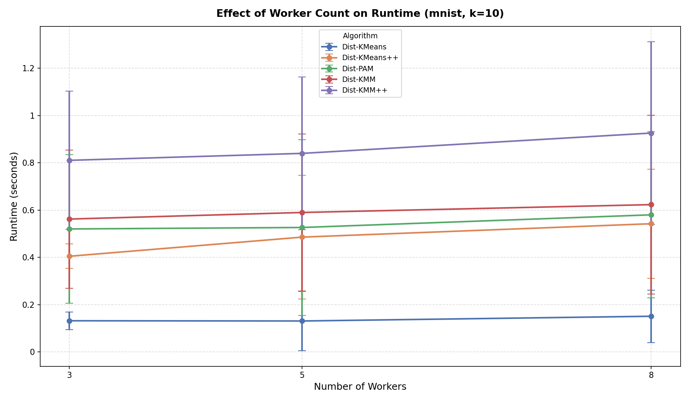
Mean runtime by algorithm and worker count
| Algorithm | Workers | Mean Runtime (s) | ±std |
|---|---|---|---|
| Dist-KMM | 3 | 0.2496 | 0.2821 |
| Dist-KMM | 5 | 0.2930 | 0.3033 |
| Dist-KMM | 8 | 0.2868 | 0.3280 |
| Dist-KMM++ | 3 | 0.3481 | 0.3799 |
| Dist-KMM++ | 5 | 0.3748 | 0.3984 |
| Dist-KMM++ | 8 | 0.4114 | 0.4392 |
| Dist-KMeans | 3 | 0.0546 | 0.0618 |
| Dist-KMeans | 5 | 0.0513 | 0.0905 |
| Dist-KMeans | 8 | 0.0617 | 0.0892 |
| Dist-KMeans++ | 3 | 0.1448 | 0.1892 |
| Dist-KMeans++ | 5 | 0.1715 | 0.2688 |
| Dist-KMeans++ | 8 | 0.1929 | 0.2823 |
| Dist-PAM | 3 | 0.2435 | 0.2703 |
| Dist-PAM | 5 | 0.2473 | 0.2964 |
| Dist-PAM | 8 | 0.3150 | 0.3367 |
▶ Execution Log
[13:27:40] EXP 0 — Iris k=3 — starting
[13:27:40] Iris loaded: shape=(150, 4)
[13:27:40] Running [centralized] KMeans on iris × 10 seeds ...
[13:27:40] Running [centralized] KMeans++ on iris × 10 seeds ...
[13:27:41] Running [centralized] PAM on iris × 10 seeds ...
[13:27:41] Running [centralized] KMM on iris × 10 seeds ...
[13:27:41] Running [centralized] KMM++ on iris × 10 seeds ...
[13:27:42] Running [distributed] Dist-KMeans on iris × 10 seeds ...
[13:27:42] Running [distributed] Dist-KMeans++ on iris × 10 seeds ...
[13:27:42] Running [distributed] Dist-PAM on iris × 10 seeds ...
[13:27:42] Running [distributed] Dist-KMM on iris × 10 seeds ...
[13:27:43] Running [distributed] Dist-KMM++ on iris × 10 seeds ...
[13:27:47] EXP 0 — Iris done (100 rows)
[13:27:47] EXP 1 — Breast Cancer k=2 — starting
[13:27:47] Breast Cancer loaded: shape=(569, 30)
[13:27:47] Running [centralized] KMeans on breast_cancer × 10 seeds ...
[13:27:48] Running [centralized] KMeans++ on breast_cancer × 10 seeds ...
[13:27:50] Running [centralized] PAM on breast_cancer × 10 seeds ...
[13:27:53] Running [centralized] KMM on breast_cancer × 10 seeds ...
[13:27:54] Running [centralized] KMM++ on breast_cancer × 10 seeds ...
[13:27:56] Running [distributed] Dist-KMeans on breast_cancer × 10 seeds ...
[13:27:57] Running [distributed] Dist-KMeans++ on breast_cancer × 10 seeds ...
[13:27:59] Running [distributed] Dist-PAM on breast_cancer × 10 seeds ...
[13:28:02] Running [distributed] Dist-KMM on breast_cancer × 10 seeds ...
[13:28:06] Running [distributed] Dist-KMM++ on breast_cancer × 10 seeds ...
[13:28:11] EXP 1 — Breast Cancer done (100 rows)
[13:28:11] Worker scaling — Iris + Breast Cancer + MNIST, workers=[3, 5, 8]
[13:28:11] Worker scaling: Iris k=3
[13:28:19] Worker scaling: Breast Cancer k=2
[13:29:00] Worker scaling (iris+bc) done
[13:29:00] EXP 1.5 — MNIST k=10 — starting
[13:29:20] MNIST loaded: shape=(2000, 30)
[13:29:20] Running [centralized] KMeans on mnist × 10 seeds ...
[13:29:37] Running [centralized] KMeans++ on mnist × 10 seeds ...
[13:29:54] Running [distributed] Dist-KMeans on mnist × 10 seeds ...
[13:30:05] Running [distributed] Dist-KMeans++ on mnist × 10 seeds ...
[13:30:20] Running [distributed] Dist-PAM on mnist × 10 seeds ...
[13:30:36] Running [distributed] Dist-KMM on mnist × 10 seeds ...
[13:30:51] Running [distributed] Dist-KMM++ on mnist × 10 seeds ...
[13:31:12] EXP 1.5 — MNIST done (70 rows)
[13:31:12] Worker scaling: MNIST k=10
[13:35:26] Worker scaling MNIST done (150 rows)
[13:35:26] COIL-100 skipped (--skip-coil)